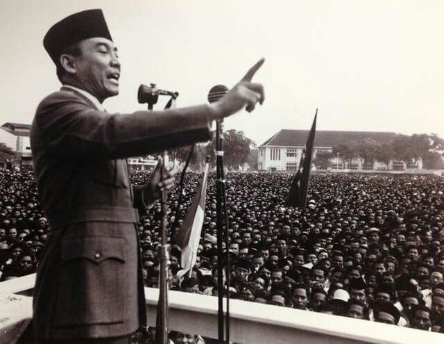
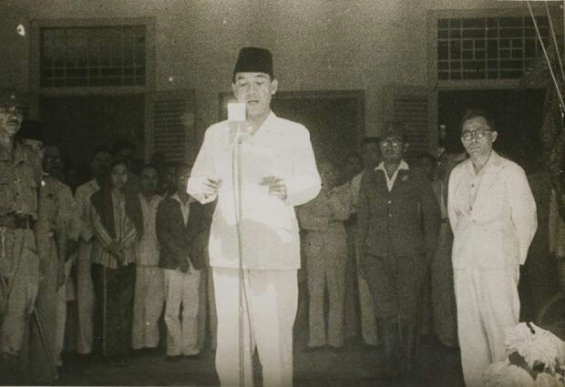

Kelahiran dan Masa Muda
Ir. Soekarno lahir dengan nama Kusno Sosrodihardjo pada tanggal 6 Juni 1901 di Surabaya, Jawa Timur. Karena sering sakit-sakitan saat kecil, namanya diubah menjadi Soekarno. Ia tumbuh menjadi pemuda yang cerdas dan memiliki visi besar untuk bangsanya.
Pendidikan tingginya ditempuh di Technische Hoogeschool te Bandoeng (sekarang Institut Teknologi Bandung), di mana ia meraih gelar insinyur (Ir.) pada tahun 1926. Di masa ini, pemikiran nasionalismenya semakin matang melalui interaksi dengan tokoh-tokoh pergerakan nasional.
Perjuangan Meraih Kemerdekaan
Pada 4 Juli 1927, Soekarno mendirikan Partai Nasional Indonesia (PNI) dengan tujuan utama memerdekakan Indonesia. Akibat aktivitas politiknya, pemerintah kolonial Belanda memenjarakannya di Sukamiskin, Bandung (1929). Di pengadilan, ia membacakan pleidoi terkenal berjudul Indonesia Menggugat.

Bung Karno membakar semangat rakyat dengan pidatonya yang menggelegar.
Setelah bebas, ia kembali ditangkap dan diasingkan ke Ende, Flores (1933), lalu dipindahkan ke Bengkulu (1938). Di pengasingan, api perjuangannya tidak pernah padam, ia terus merumuskan dasar negara dan strategi kemerdekaan.
Detik-Detik Proklamasi

Pembacaan Teks Proklamasi 17 Agustus 1945.
Memasuki masa pendudukan Jepang, Soekarno aktif memimpin berbagai organisasi seperti Putera dan PPKI untuk mempersiapkan kemerdekaan. Ia juga merumuskan Pancasila pada 1 Juni 1945.
Pada tanggal 17 Agustus 1945, didampingi Drs. Mohammad Hatta, Soekarno memproklamasikan kemerdekaan Indonesia di Jalan Pegangsaan Timur No. 56, Jakarta. Peristiwa bersejarah ini menandai lahirnya negara Republik Indonesia.
Pemimpin di Kancah Dunia
Sebagai Presiden pertama, visi Soekarno tidak terbatas pada ranah domestik.
- Beliau memprakarsai Konferensi Asia-Afrika (1955) di Bandung.
- Menjadi salah satu pendiri Gerakan Non-Blok untuk menentang imperialisme.
- Semboyan terkenalnya: "Jasmerah - Jangan Sekali-kali Meninggalkan Sejarah".
Akhir Hayat Sang Bapak Bangsa
 Kunjungan Presiden Soekarno ke Belitung pada tahun 1956.
Kunjungan Presiden Soekarno ke Belitung pada tahun 1956.
Masa kepemimpinan Soekarno berakhir setelah terjadinya gejolak politik pasca Gerakan 30 September 1965. Kekuasaannya perlahan dilucuti hingga ia menjadi tahanan rumah di Wisma Yaso, Jakarta.
Bung Karno wafat pada 21 Juni 1970 dan dimakamkan di Blitar, Jawa Timur. Ia meninggalkan warisan yang tak ternilai berupa kemerdekaan, Pancasila, dan kebanggaan sebagai sebuah bangsa yang merdeka dan berdaulat.